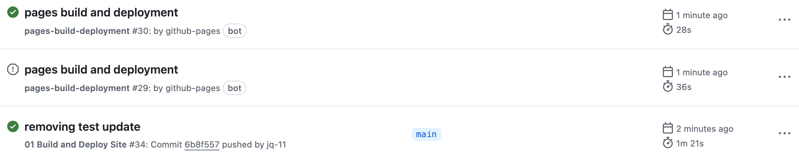

How to Deploy Your Website#
Wait, Let’s Recap#
You currently have all the files we need to build and develop your website (all included in the basic workshop template), locally on your own laptop (since we git cloned!). Since you know how to git pull, git add, git commit and git push, we can update our GitHub repository to hold edits to our workshop.
Our template is even ready to preview! Let’s look at how your website would look, using our local files.
How to Preview Your Website#
Navigate to the folder containing your project folder (the folder that you git cloned) in Terminal.
Alternatively, …
Navigate to your project folder in Terminal. Then, run
cd ..in terminal. Now you are in the folder containing your project folder (the parent folder)!Run the following command:
CHANGE “workshop-name” TO YOUR WORKSHOP NAME
For example, if my workshop is called AUR_2024, I would run
jupyter-book build --all AUR_2024jupyter-book build --all workshop-name
You can also use the shortened verison of “jupyter-book” and run the following command instead!
jb build --all workshop-name
Tip
When you are continuously previewing your workshop, you will be continuously running this command in terminal. Recall that hitting the [↑] arrow key reenters your previous command, so it’s ready for you to run!
GitHub Pages and gh-pages#
Workshop Repo VS Workshop Website#
Now, you have made a repository that holds what GitHub needs to make our website (the basic workshop template). Essentially, the template has already been configured so that the html files that make up our website go into a folder called docs. We need to tell GitHub to look at the docs folder to find our website files and make it available to see online (a.k.a deploy it). This is what we mean when we say CBW uses GitHub pages to deploy our website.
Distinction
GitHub (ex. cbw-dev/jupyterbook-template) holds your repo, which has version control for all your files!
The deployed website (ex. https://cbw-dev.github.io/jupyterbook-template/) has the workshop online.
In the top navigation bar, select Settings.

Then, go to the Pages sidebar option.

“Deploy from a branch” is already selected, which is what we want. We must change the branch from “none” to “main”. Select the “None” dropdown button and select “main”.

Then, change the folder from
/ rootto/docs. Then press save.
Great! Now we’re waiting on the page to build and deploy, which should take less than a minute.
Check Your Deploy and See your Website! {#check-deploy}#
To see updates, go to the Actions page (found along the top navigation bar. This will help you understand how the deploy is working, and if it succeeded or failed.
 \
\
You can click pages build and deployment for updates.

A **successful deploy** will have a green checkmark next to it. You can inspect the 3 steps: build, report-build-status, deploy. Once it's done deploying, **you can find the website at the link provided under the "deploy" step**!
 \
\
A failed deploy will have a red cross next to it. Clicking through the steps can help you determine what went wrong in the deploy.
Warning: A website can build properly, but may not deploy properly! It is a good idea to check after making big changes.
 \
\
A Very Specific Build and Deployment Warning {-}#
\
This is a very specific (and unlikely) warning. It occurs when 1 deploy hasn’t finished, but another deploy began. THIS IS NOT A CONCERN. This is a warning message you do not have to worry about!